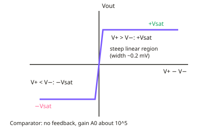

A-level Physics Year 13 · Topic 24
Electronics: operational amplifiers
Operational amplifiers are the building blocks of analogue electronics.
We will meet the ideal op amp and its huge open-loop gain, and use it as a comparator.
Then we build inverting, non-inverting, summing and difference amplifiers, and study bandwidth and R C filters.
- 6 subtopics
- 120 questions
- Free: 24.1 notes and 8 questions
In this topic
- 24.1The ideal op-amp, open-loop gain and the comparatorFree below · 16 questions
- 24.2The inverting amplifier and virtual earthOpen in Full Marks · 18 questions
- 24.3The non-inverting amplifier and voltage followerOpen in Full Marks · 16 questions
- 24.4Summing and difference amplifiersOpen in Full Marks · 13 questions
- 24.5Frequency response, bandwidth and gain–bandwidth productOpen in Full Marks · 37 questions
- 24.6RC filters: high-pass and low-passOpen in Full Marks · 20 questions
24.1 · Free notes
The ideal op-amp, open-loop gain and the comparator

Key points
- An operational amplifier (op-amp) is a high-gain differential amplifier with an inverting input (−), a non-inverting input (+) and one output. It needs a dual supply, typically ±9 V or ±15 V.
- In the linear region, Vout = A₀(V₊ − V₋). A₀ is the open-loop gain, the gain with no feedback. A real op-amp has A₀ of about 10⁵ or more.
- The ideal op-amp has infinite open-loop gain, infinite input resistance (no current into either input), zero output resistance and infinite bandwidth. It also has zero noise and zero offset.
- Because the input resistance is very high, a real op-amp draws a negligible current from the source. It can therefore measure a voltage without altering it.
- The output cannot exceed the supply rails. It saturates at +Vsat or −Vsat, which lie just inside the supply voltages (about ±(Vs − 1.5 V)). For a ±12 V supply this is roughly ±11 V.
- Worked example of saturation: with A₀ = 10⁵ and a ±12 V supply, the output stays linear only if |V₊ − V₋| < 12/10⁵ ≈ 0.12 mV. Any larger difference saturates the output.
- With no feedback (open loop) an op-amp is a comparator. If V₊ > V₋ the output is +Vsat. If V₊ < V₋ the output is −Vsat.
- A comparator compares an input voltage (e.g. from a sensor in a potential divider) with a reference voltage. The output switches when the inputs cross, so it acts as a digital-style switch for a light, temperature or level detector.
- The transfer characteristic (Vout against V₊ − V₋) has two flat saturated regions joined by a very steep, almost vertical linear region through the origin. Its gradient is A₀.
- Exam tip: open-loop gain is far too large and unstable for useful linear amplification. Negative feedback is needed to give a stable, controlled gain, and this is covered in the next subtopics.
- Exam tip: state the output as +Vsat or −Vsat (not 0 V) when asked about a comparator whose inputs differ by more than a fraction of a millivolt.
In more detail
- Worked linear range: with A₀ = 10⁵ and ±12 V supplies, the output is linear only while |V₊ − V₋| < 12 ÷ 10⁵ = 120 μV.
- Worked saturation: V₊ = 3.00 V and V₋ = 2.99 V → 10 mV × 10⁵ = 1000 V calculated, so the output simply saturates at +V_sat.
- Worked comparator: a thermistor divider feeds V₋ and a 2.0 V reference feeds V₊; when V₋ rises above 2.0 V the output flips from +V_sat to −V_sat.
- Ideal vs real: ideal = infinite gain, infinite input resistance, zero output resistance; a typical real op-amp has A₀ ≈ 2 × 10⁵, input resistance about 2 MΩ, output about 75 Ω.
Practice
The ideal op-amp, open-loop gain and the comparator: 8 questions
Pick an answer to check it, or open the answer for the explanation.
1. Which property does an ideal op-amp have?
- Infinite output resistance
- Infinite input resistance
- Zero input resistance
- Zero open-loop gain
Show answer
B: Infinite input resistance. An ideal op-amp has infinite input resistance, so no current enters either input. It also has infinite open-loop gain and zero output resistance.
2. An op-amp has open-loop gain 2.0 × 10⁵ and a ±15 V supply. What is the largest |V₊ − V₋| for which the output is not saturated?
- 3.0 V
- 30 µV
- 7.5 mV
- 75 µV
Show answer
D: 75 µV. Vin = Vout/A₀ = 15 V / 2.0×10⁵ = 7.5×10⁻⁵ V = 75 µV. Larger differences saturate the output.
3. Which circuit statement describes an op-amp comparator?
- Its output is proportional to the input for any input
- It always has a gain of exactly 1
- It has negative feedback from output to the inverting input
- It has no feedback and its output switches between +Vsat and −Vsat
Show answer
D: It has no feedback and its output switches between +Vsat and −Vsat. A comparator is operated open loop. The output saturates at +Vsat or −Vsat depending on which input is higher.
4. Why is an op-amp with no feedback unsuitable as a linear amplifier?
- Its huge gain saturates the output for tiny input differences
- Its output resistance is infinite
- Its input resistance is too low
- Its gain is zero
Show answer
A: Its huge gain saturates the output for tiny input differences. With A₀ about 10⁵, a difference of only about 0.1 mV drives the output to saturation, so the output is not proportional to the input.
5. A ±12 V supply op-amp is used with no feedback and a large input difference. The output is best described as:
- Infinite
- Slightly less than 12 V in magnitude
- Always zero
- Exactly +12 V
Show answer
B: Slightly less than 12 V in magnitude. The output saturates a little inside the supply rails, so |Vsat| is slightly below 12 V. It cannot be exactly the rail value or infinite.
6. The transfer characteristic of an open-loop op-amp (Vout against V₊ − V₋) has what shape?
- A horizontal line at 0 V
- A straight line through the origin with gradient 1
- A parabola
- A steep central linear section with flat saturated regions either side
Show answer
D: A steep central linear section with flat saturated regions either side. The output rises very steeply (gradient A₀) through the origin, then flattens at +Vsat and −Vsat.
7. Which is NOT a property of an ideal op-amp?
- Infinite open-loop gain
- Zero output resistance
- Output voltage can exceed the supply voltage
- Infinite bandwidth
Show answer
C: Output voltage can exceed the supply voltage. Even an ideal op-amp cannot output more than its supply allows, so its output is limited by the rails. The other three are ideal properties.
8. Why does a high input resistance matter when an op-amp measures a sensor voltage?
- It draws negligible current, so it does not alter the sensor voltage
- It makes the output resistance zero
- It increases the open-loop gain
- It lets the output exceed the supply voltage
Show answer
A: It draws negligible current, so it does not alter the sensor voltage. A negligible input current means the sensor's potential divider is not disturbed, so the measured voltage is accurate.
Keep going in Full Marks
Full Marks has 16 questions on The ideal op-amp, open-loop gain and the comparator (8 more than here), set out in practice levels. You also get notes and 3D models for all 6 subtopics of Electronics: operational amplifiers, plus games, timed exams and past papers.
On your exam board
Not in the OCR A, OCR B, Edexcel and Cambridge specifications.